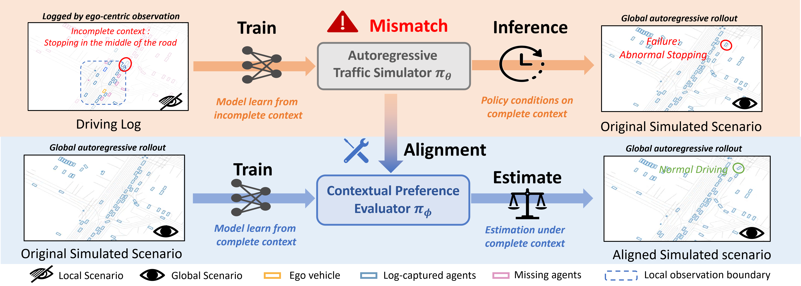
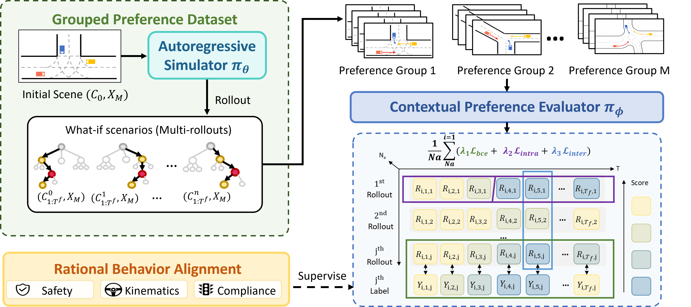
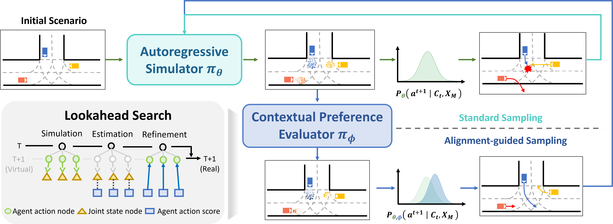
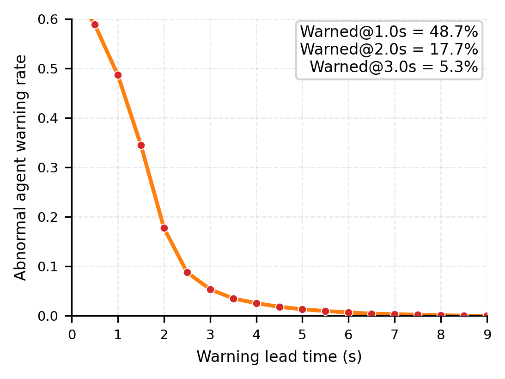
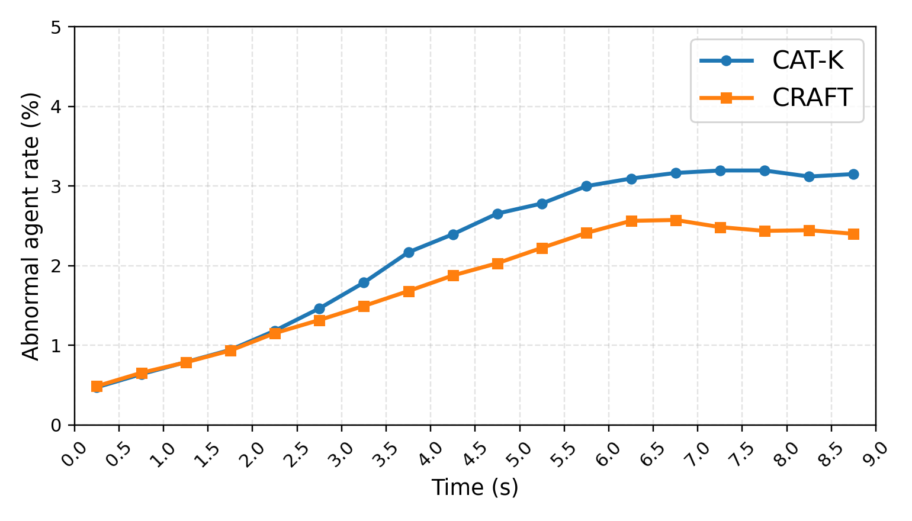
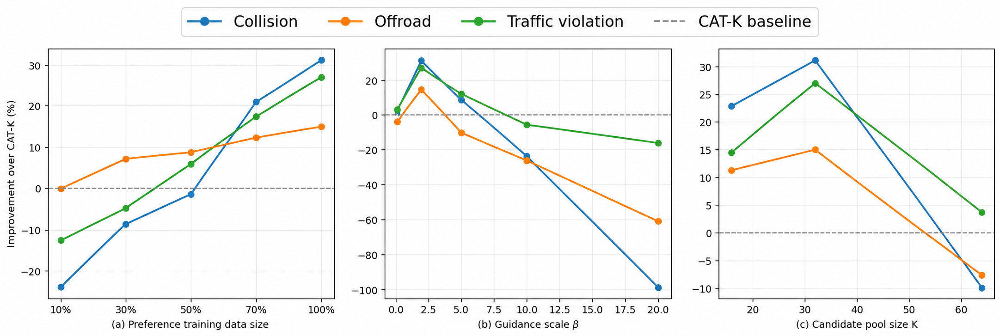

Bridging Local Observation and Global Simulation in Closed-Loop Traffic Modeling
1Beihang University · 2The University of Hong Kong · *Equal contribution
CRAFT turns context-induced simulation failures into test-time guidance, improving realism, safety, and rule compliance without retraining the base simulator.
on CAT-K
on SMART
with one plug-in framework
required at test time

Overview
Local observations can produce globally inconsistent behavior.
Autoregressive traffic simulators learn from ego-centric logs, but are deployed in environments where the complete scene is observable. This local-to-global mismatch can trigger abnormal stops, unsafe interactions, and rule violations.
Discover failures
A frozen simulator generates diverse what-if rollouts under complete scene context, exposing behaviors that are difficult to identify from logged data alone.
Learn preferences
CRAFT converts discovered failures into contextual preference pairs and trains a Contextual Preference Evaluator to recognize safer, more coherent actions.
Guide at test time
The evaluator reweights Top-K action candidates through one-step lookahead, improving closed-loop behavior without changing the simulator parameters.
Rollouts
CRAFT changes the behavior that matters in closed loop.
Paired examples make the difference visible: the guided simulator avoids unnecessary stopping, unsafe interactions.
Rule compliance
Obeying traffic signals
The baseline violates the signal, while CRAFT follows the rule and completes the interaction safely.
Traffic flow
Avoiding abnormal stops
CRAFT suppresses unnecessary stopping and maintains smoother, more rational traffic flow.
Interaction safety
Coordinating with nearby agents
Context-aware guidance produces safer and more coordinated multi-agent behavior.
4
4
4
Method
Failures become supervision; preferences become guidance.
CRAFT separates learning from deployment: contextual preferences are learned once, then used as a lightweight plug-in during closed-loop simulation.
Training
Learn contextual preferences from what-if rollouts.
A frozen simulator proposes diverse trajectories. CRAFT detects context-induced failures and constructs preference pairs under the complete scene state.

Inference
Reweight candidate actions with one-step lookahead.
The Contextual Preference Evaluator scores Top-K action candidates using their predicted next scenes, then adjusts the simulator distribution without retraining.

Main results
Test-time alignment improves safety while preserving realistic motion.
Lower is better for every metric. CRAFT improves both CAT-K and SMART, showing that the guidance mechanism transfers across base simulators.
| Base Model | Strategy | JSD (× 10−2) ↓ | Collision (%) ↓ | Offroad (%) ↓ | Traffic (%) ↓ P-Sc. | ||||
|---|---|---|---|---|---|---|---|---|---|
| Spd. | Ang. | Dist. | P-Ag. | P-Sc. | P-Ag. | P-Sc. | |||
| Log | Log replay | 0.00 | 0.00 | 0.00 | 0.56 | 5.20 | 1.59 | 14.40 | 20.70 |
| GUMP | Top-K | 4.78 | 5.41 | 11.36 | 4.06 | 36.30 | 3.80 | 26.90 | 32.70 |
| SMART | Top-K | 1.07 | 3.23 | 0.56 | 3.13 | 15.10 | 2.52 | 19.10 | 38.80 |
| CAT-K | Top-K | 1.02 | 2.96 | 0.53 | 3.41 | 15.70 | 2.54 | 19.50 | 36.50 |
| R1Sim | Top-K | 1.05 | 3.16 | 0.56 | 3.36 | 15.50 | 2.23 | 16.30 | 36.60 |
| CAT-K | Auto-labeler | 1.19 | 3.02 | 0.67 | 3.21 | 15.50 | 2.57 | 20.30 | 36.70 |
| CAT-K | CRAFT | 0.92 | 2.20 | 0.69 | 2.46 | 10.80 | 2.26 | 16.60 | 26.60 |
| SMART | CRAFT | 0.91 | 2.20 | 0.72 | 2.60 | 11.90 | 2.06 | 17.10 | 25.90 |
Test-time analysis
CRAFT recognizes risk before failure fully develops.
The preference evaluator provides an early signal for abnormal behavior and prevents small errors from compounding across long-horizon rollouts.


Robustness
The gains remain stable across training and inference choices.
More preference data consistently helps, while moderate guidance strength and candidate pool size provide the most reliable test-time alignment.

Takeaways
A small test-time module can correct a large deployment mismatch.
Safer closed-loop behavior
Lower collision, off-road, and traffic-violation rates.
Plug-in generality
Improves CAT-K and SMART without retraining either simulator.
More rational interaction
Mitigates abnormal stops, unsafe negotiation, and error accumulation.
Citation
BibTeX
@inproceedings{anonymous2026craft,
title = {Bridging Local Observation and Global Simulation in Closed-Loop Traffic Modeling},
author = {Ziyan Wang and Tan Xiang and Peng Chen and Xintao Yan},
booktitle = {},
year = {2026}
}